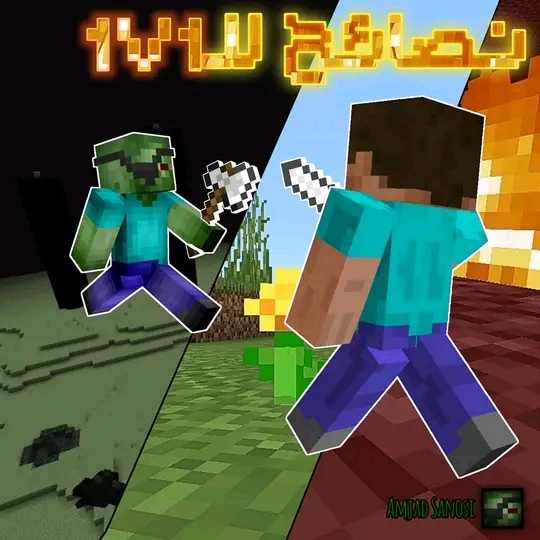
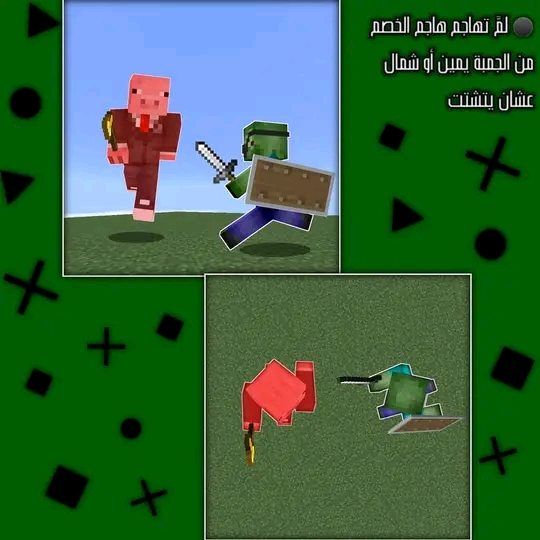
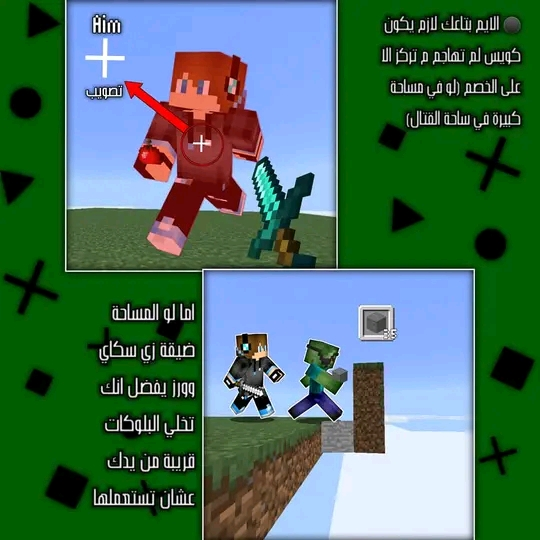
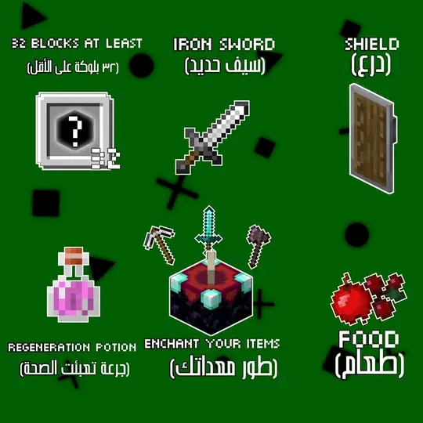

pvp /شرح المواجهات
حبة نصائح للقتال في واحد ضد واحد لو بتلعب اونلاين (Sky wars) أو (Bed wars) ف لو مهتم كمل😸
والله تعبت في التصميم اتفاعلو عليكم الله🙏😔
🔴 تنبيه هام لو ما فهمت من الشرح تابع الصور

(Shield) يفضل يكون عندك
سيف حديد و
⚫ لمَّ تهاجم هاجم الخصم من الجمبة يمين أو شمال عشان يتشتت
⚫ الايم بتاعك لازم يكون كويس لم تهاجم م تركز الا على الخصم (لو في مساحة كبيرة في ساحة القتال) اما لو المساحة ضيقة زي سكاي وورز يفضل انك تخلي البلوكات قريبة من يدك عشان تستعملها
⚫ لم تهاجم الصق في الزول و ما تديهو فرصة يركز، تهاجم طوالي
⚫ يفضل انو يكون عندك جرعات (regeneration) عشان تعبي قلوبك بسرعة و بتديك أفضلية على الخصم
⚫ لم تلاحظ أنو في اثنين بتقاتلو خليهم حبة لم تنقص قلوبهم بعدها امشي اهجم عليهم
⚫ لو انت سريع يفضل انك تطور ادواتك في طوالة التطوير و اول ما تلقه زجاجات الاكسبي استعملها عشان تطور بيها نفسك
⚫ لم يهاجمك زول من قدامك لمن يكون قريب منك خت بلوكتين قدامك عشن توقفو و امشي ليهو و هاجم انت



لو عندك نصائح زيادة اكتبها لينا في التعليقات
#ماين_كرافت_السودان
#ماين_كرافت
#Amjad_Sanosi_MC
#امجد_السنوسي_ماينكرافت
تم التحديث/الانشاء في
19/3/2024